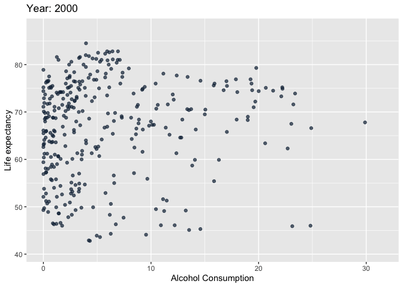

Assignment 2 - Data Viz, Wrangling and Advanced Regression
Part 1 Data Wrangling
# Read data
le <- read.csv("life expectancy of women.csv")
ac <- read.csv("alcohol consumption.csv")- Put the life expectancy data in “tidy” format by creating a new column “Sex”. You may want to use pivot_longer function from the tidyr package.
le <- le %>%
pivot_longer(
cols = starts_with("Life"),
names_to = "Sex",
values_to = "Life_Expectation",
values_drop_na = TRUE
) %>% mutate(Sex = case_when(grepl("female", Sex, fixed=TRUE)
~ "Female", TRUE ~ "Male"))- Filter the alcohol consumption data to exclude rows with data for “Both sexes”.
ac <- ac %>% filter(Sex != "Both sexes")- For convenience, you may rename any variables which have complicated names.
# We will select variable we are interested in at this step
ac <- ac %>% mutate(Alcohol = Alcohol.total.per.capita..15...consumption.in.liters..numeric.) %>%
select(Country, Country.Code, Year, Sex, Alcohol)
le <- le %>% mutate(Country = Entity, Country.Code = Code) %>%
select(Country, Country.Code, Year, Sex, Life_Expectation)
# Check the data
head(ac, 1)head(le, 1)- Merge these datasets by country name and year
# We also want to merge by sex
dat <- merge(x = ac,
y = le,
by.x=c("Country","Year", "Sex"),
by.y=c("Country","Year", "Sex"))- Create a summary tables showing the average and sd of life expectancy and alcohol consumption by year, and sex.
dat %>% group_by(Year, Sex) %>% summarise(mean_le = mean(Life_Expectation),
sd_le = sd(Life_Expectation),
mean_ac = mean(Alcohol),
sd_ac = sd(Alcohol))## `summarise()` has grouped output by 'Year'. You can override using the
## `.groups` argument.- Create a new categorical variable named “consumption_level” using the alcohol total per capita variable. For female and male separately, calculate the quartiles of alcohol consumption. Categorize consumption level as low (0-q1) medium (q1-q3), and high (q3+). To make sure the variable is rightly coded, create a summary table that contains the minimum total alcohol consumption, maximum alcohol consumption, and number of observations for each category.
female <- quantile(dat[dat$Sex=="Female",]$Alcohol, probs=c(0.25, 0.75))
male <- quantile(dat[dat$Sex=="Male",]$Alcohol, probs=c(0.25, 0.75))
dat <- dat %>% mutate(consumption_level =
case_when(Sex=="Female" & Alcohol<female[1]~"low",
Sex=="Male" & Alcohol<male[1]~"low",
Sex=="Female" & Alcohol>=female[1] & Alcohol<female[2]~"median",
Sex=="Male" & Alcohol>=male[1] & Alcohol<male[2]~"median",
TRUE ~ "high"))Part 2 Looking At Data
The primary questions of interest are: 1. What is the association between life expectancy and alcohol consumption? 2. Does this association differ by Sex? 3. How has life expectancy and alcohol consumption changed over time?
Follow the EDA checklist from week 3 and the previous assignment. Be sure to focus on the key variables.
# We have already selected the key variables previously
summary(dat$Alcohol)## Min. 1st Qu. Median Mean 3rd Qu. Max.
## 0.000 1.300 3.690 5.943 8.893 31.440summary(dat$Life_Expectation)## Min. 1st Qu. Median Mean 3rd Qu. Max.
## 40.70 63.20 71.00 69.71 77.40 87.40table(dat$Country)##
## Afghanistan Albania
## 40 40
## Algeria Andorra
## 40 40
## Angola Antigua and Barbuda
## 40 40
## Argentina Armenia
## 40 40
## Australia Austria
## 40 40
## Azerbaijan Bahamas
## 40 40
## Bahrain Bangladesh
## 40 40
## Barbados Belarus
## 40 40
## Belgium Belize
## 40 40
## Benin Bhutan
## 40 40
## Bosnia and Herzegovina Botswana
## 40 40
## Brazil Bulgaria
## 40 40
## Burkina Faso Burundi
## 40 40
## Cambodia Cameroon
## 40 40
## Canada Central African Republic
## 40 40
## Chad Chile
## 40 40
## China Colombia
## 40 40
## Comoros Congo
## 40 40
## Cook Islands Costa Rica
## 40 40
## Croatia Cuba
## 40 40
## Cyprus Czechia
## 40 40
## Denmark Djibouti
## 40 40
## Dominica Dominican Republic
## 40 40
## Ecuador Egypt
## 40 40
## El Salvador Equatorial Guinea
## 40 40
## Eritrea Estonia
## 40 40
## Eswatini Ethiopia
## 40 40
## Fiji Finland
## 40 40
## France Gabon
## 40 40
## Gambia Georgia
## 40 40
## Germany Ghana
## 40 40
## Greece Grenada
## 40 40
## Guatemala Guinea
## 40 40
## Guinea-Bissau Guyana
## 40 40
## Haiti Honduras
## 40 40
## Hungary Iceland
## 40 40
## India Indonesia
## 40 40
## Iraq Ireland
## 40 40
## Israel Italy
## 40 40
## Jamaica Japan
## 40 40
## Jordan Kazakhstan
## 40 40
## Kenya Kiribati
## 40 40
## Kuwait Kyrgyzstan
## 40 40
## Latvia Lebanon
## 40 40
## Lesotho Liberia
## 40 40
## Libya Lithuania
## 40 40
## Luxembourg Madagascar
## 40 40
## Malawi Malaysia
## 40 40
## Maldives Mali
## 40 40
## Malta Mauritania
## 40 40
## Mauritius Mexico
## 40 40
## Mongolia Montenegro
## 40 26
## Morocco Mozambique
## 40 40
## Myanmar Namibia
## 40 40
## Nauru Nepal
## 40 40
## Netherlands New Zealand
## 40 40
## Nicaragua Niger
## 40 40
## Nigeria Niue
## 40 40
## Norway Oman
## 40 40
## Pakistan Panama
## 40 40
## Papua New Guinea Paraguay
## 40 40
## Peru Philippines
## 40 40
## Poland Portugal
## 40 40
## Qatar Romania
## 40 40
## Rwanda Saint Kitts and Nevis
## 40 40
## Saint Lucia Saint Vincent and the Grenadines
## 40 40
## Samoa Sao Tome and Principe
## 40 40
## Saudi Arabia Senegal
## 40 40
## Serbia Seychelles
## 26 40
## Sierra Leone Singapore
## 40 40
## Slovakia Slovenia
## 40 40
## Solomon Islands Somalia
## 40 40
## South Africa Spain
## 40 40
## Sri Lanka Suriname
## 40 40
## Sweden Switzerland
## 40 40
## Tajikistan Thailand
## 40 40
## Togo Tonga
## 40 40
## Trinidad and Tobago Tunisia
## 40 40
## Turkey Turkmenistan
## 40 40
## Tuvalu Uganda
## 40 40
## Ukraine United Arab Emirates
## 40 40
## Uruguay Uzbekistan
## 40 40
## Vanuatu Yemen
## 40 40
## Zambia Zimbabwe
## 40 40table(dat$Year)##
## 2000 2001 2002 2003 2004 2005 2006 2007 2008 2009 2010 2011 2012 2013 2014 2015
## 332 332 332 332 332 332 332 336 336 336 336 336 336 336 336 336
## 2016 2017 2018 2019
## 336 336 336 336table(dat$Sex)##
## Female Male
## 3346 3346# Check NAs
sum(is.na(dat))## [1] 0Base on the summary tables, we did not notcie any missing values or data errors.
par(mfrow=c(1,2))
boxplot(dat$Life_Expectation, ylab = "Life Expectation",
main = "Boxplot of Life Expectation", col = "Green")
boxplot(dat$Alcohol, ylab = "Alcohol Consumption",
main = "Boxplot of Alcohol Consumption", col = "Yellow") From both box plots, we notice that there are some outliers in both
variables. However, this is expected since there exists people who
consume more Alcohol and there exists people who have lower Life
Expectation.
From both box plots, we notice that there are some outliers in both
variables. However, this is expected since there exists people who
consume more Alcohol and there exists people who have lower Life
Expectation.
Visualization Create the following figures and interpret them. Be sure to include easily understandable axes, titles, and legends.
- Stacked histogram of alcohol consumption by sex. Use different color schemes than the ggplot default.
dat %>% ggplot(aes(x=Alcohol, fill=Sex)) + geom_histogram(bins = 20, col = "red") +
labs(x = "Alcohol consumption", y = "Count", title = "Histogram of alcohol consumption by sex")
Figure Interpretation: Most People consume alcohol less than 10 unit, Females are more likely to drink less alcohol and Males are more likely to drink more alcohol
- Facet plot by year for 2000, 2010, and 2019 showing scatterplots with regression lines of life expectancy and alcohol consumption
dat %>% filter(Year == 2000 | Year == 2010 | Year == 2019) %>%
ggplot(aes(y = Life_Expectation, x = Alcohol, color = Year)) +
geom_point() + geom_smooth(method = "lm") + facet_wrap(~Year) +
labs(x = "Alcohol Consumption", y = "Life Expectancy",
title = "Scatterplots with regression lines of life expectancy and alcohol consumption")## `geom_smooth()` using formula = 'y ~ x'
Figure Interpretation: For all of these years, Life Expectancy increases as Alcohol Consumption increases. The Life Expectancy increases by years.
- A linear model of life expectancy as a function of time, adjusted for sex. Compare the summary for Canada, and a second country of your choice.
model_full <- lm(Life_Expectation ~ Year + Sex, data = dat)
model_Canada <- lm(Life_Expectation ~ Year + Sex, data = dat[dat$Country == "Canada",])
model_China <- lm(Life_Expectation ~ Year + Sex, data = dat[dat$Country == "China",])
summary(model_full)##
## Call:
## lm(formula = Life_Expectation ~ Year + Sex, data = dat)
##
## Residuals:
## Min 1Q Median 3Q Max
## -27.367 -6.413 1.836 6.960 16.682
##
## Coefficients:
## Estimate Std. Error t value Pr(>|t|)
## (Intercept) -580.19632 38.19150 -15.19 <2e-16 ***
## Year 0.32467 0.01901 17.08 <2e-16 ***
## SexMale -5.06339 0.21900 -23.12 <2e-16 ***
## ---
## Signif. codes: 0 '***' 0.001 '**' 0.01 '*' 0.05 '.' 0.1 ' ' 1
##
## Residual standard error: 8.957 on 6689 degrees of freedom
## Multiple R-squared: 0.11, Adjusted R-squared: 0.1097
## F-statistic: 413.2 on 2 and 6689 DF, p-value: < 2.2e-16summary(model_Canada)##
## Call:
## lm(formula = Life_Expectation ~ Year + Sex, data = dat[dat$Country ==
## "Canada", ])
##
## Residuals:
## Min 1Q Median 3Q Max
## -0.53566 -0.17599 0.03276 0.18809 0.46039
##
## Coefficients:
## Estimate Std. Error t value Pr(>|t|)
## (Intercept) -2.621e+02 1.472e+01 -17.81 <2e-16 ***
## Year 1.718e-01 7.326e-03 23.46 <2e-16 ***
## SexMale -4.465e+00 8.449e-02 -52.85 <2e-16 ***
## ---
## Signif. codes: 0 '***' 0.001 '**' 0.01 '*' 0.05 '.' 0.1 ' ' 1
##
## Residual standard error: 0.2672 on 37 degrees of freedom
## Multiple R-squared: 0.9891, Adjusted R-squared: 0.9885
## F-statistic: 1672 on 2 and 37 DF, p-value: < 2.2e-16summary(model_China)##
## Call:
## lm(formula = Life_Expectation ~ Year + Sex, data = dat[dat$Country ==
## "China", ])
##
## Residuals:
## Min 1Q Median 3Q Max
## -0.98607 -0.04110 0.07953 0.17883 0.28329
##
## Coefficients:
## Estimate Std. Error t value Pr(>|t|)
## (Intercept) -5.267e+02 1.368e+01 -38.50 <2e-16 ***
## Year 3.009e-01 6.807e-03 44.21 <2e-16 ***
## SexMale -5.275e+00 7.851e-02 -67.19 <2e-16 ***
## ---
## Signif. codes: 0 '***' 0.001 '**' 0.01 '*' 0.05 '.' 0.1 ' ' 1
##
## Residual standard error: 0.2483 on 37 degrees of freedom
## Multiple R-squared: 0.9943, Adjusted R-squared: 0.994
## F-statistic: 3235 on 2 and 37 DF, p-value: < 2.2e-16dat %>% filter(Country == "Canada" | Country == "China") %>%
ggplot(aes(y = Life_Expectation, x = Year, color = Country)) +
geom_point() + geom_smooth(method = "lm") + facet_wrap(~Sex) +
labs(x = "Year", y = "Life Expectancy",
title = "Linear Model of life expectancy in Canada & China by Sex and Year")## `geom_smooth()` using formula = 'y ~ x'
Summary: From both linear model and plots, we notice that Male have lower Life Expectancy than Female. The Life expecancy is increasing over years. Canada has a higher Life expectancy than China, while both country have higher Life expectancy than the World Average.
- A barplot of male and female life expectancy for the 10 countries with largest discrepancies in 2019.
discrepancies <- dat %>% filter(Year == 2019) %>% group_by(Country) %>%
summarise(dis = abs(max(Life_Expectation) - min(Life_Expectation))) %>%
arrange(desc(dis))
dat %>% filter(Country %in% head(discrepancies, 10)$Country & Year == 2019) %>%
ggplot(aes(x = Sex, y = Life_Expectation, fill = Sex)) +
geom_col() +
facet_wrap(~Country) + labs(x = "Sex", y = "Life Expectation",
title = "Barplot of male and female life expectancy
for the 10 countries with largest discrepancies in 2019")Figure Interpretation: Females usually have higher life expectancy than Males.
- A boxplot of life expectancy by alcohol consumption level and sex for the year 2019.
dat %>% filter(Year == 2019) %>%
ggplot(aes(x =consumption_level, y = Life_Expectation, color = Sex, fill = consumption_level)) +
geom_boxplot() +
facet_wrap(~Sex) +
labs(x = "Consumption Level", y = "Life Expectation",
title = "Boxplot of life expectancy by alcohol consumption level and sex for the year 2019")
Figure Interpretation: People with high alcohol consumption level usually have higher life expectancy. People with Low and Median alcohol consumption level usually have similar but less life expectancy. Females have overall higher life expectancy than males.
- Choose a visualization to examine the association life expectancy with alcohol consumption over time.
p <- dat %>% ggplot(aes(Alcohol, Life_Expectation, color = Year)) +
geom_point(alpha = 0.7, show.legend = FALSE) +
# Here comes the gganimate specific bits
labs(title = 'Year: {frame_time}', x = 'Alcohol Consumption', y = 'Life expectancy') +
transition_time(Year) +
ease_aes('linear')
animate(p, duration = 5, fps = 20, renderer = gifski_renderer())
anim_save("output.gif")Figure Interpretation: For all of these years, Life Expectancy increases as Alcohol Consumption increases. The Life Expectancy increases by years.
Part 3 Advanced Regression
Construct a multiple linear regression model to examine the association between alcohol consumption and life expectancy, adjusted for time and sex. First use time as a linear predictor variable, and then fit another model where you put a cubic regression spline on time. Provide summaries of your models, plots of the linear and non-linear associations, and interpretation of the linear and non-linear associations.
# Multiple Linear Model
linear_modelA <- lm(Life_Expectation ~ Year + Sex + Alcohol, data = dat)
summary(linear_modelA)##
## Call:
## lm(formula = Life_Expectation ~ Year + Sex + Alcohol, data = dat)
##
## Residuals:
## Min 1Q Median 3Q Max
## -27.421 -5.276 2.071 6.275 16.226
##
## Coefficients:
## Estimate Std. Error t value Pr(>|t|)
## (Intercept) -581.31471 36.40924 -15.97 <2e-16 ***
## Year 0.32453 0.01812 17.91 <2e-16 ***
## SexMale -8.77330 0.25312 -34.66 <2e-16 ***
## Alcohol 0.54729 0.02111 25.92 <2e-16 ***
## ---
## Signif. codes: 0 '***' 0.001 '**' 0.01 '*' 0.05 '.' 0.1 ' ' 1
##
## Residual standard error: 8.539 on 6688 degrees of freedom
## Multiple R-squared: 0.1912, Adjusted R-squared: 0.1909
## F-statistic: 527.1 on 3 and 6688 DF, p-value: < 2.2e-16dat %>%
ggplot(aes(y = Life_Expectation, x = Alcohol, color = Sex)) +
geom_point() + geom_smooth(method = "lm", col = "Brown", data = dat[dat$Sex=="Female",]) +
geom_smooth(method = "lm", col = "Blue", data = dat[dat$Sex=="Male",]) +
facet_wrap(~Year) +
labs(x = "Alcohol Consumption", y = "Life Expectancy",
title = "Scatterplots with regression lines of life expectancy and alcohol consumption")## `geom_smooth()` using formula = 'y ~ x'
## `geom_smooth()` using formula = 'y ~ x'
# Simple Regression Model on Year
linear_modelB <- gam(Life_Expectation ~ s(Year, bs="cr") + Sex + Alcohol, data = dat)
summary(linear_modelB)##
## Family: gaussian
## Link function: identity
##
## Formula:
## Life_Expectation ~ s(Year, bs = "cr") + Sex + Alcohol
##
## Parametric coefficients:
## Estimate Std. Error t value Pr(>|t|)
## (Intercept) 70.83944 0.15717 450.73 <2e-16 ***
## SexMale -8.77330 0.25312 -34.66 <2e-16 ***
## Alcohol 0.54729 0.02111 25.92 <2e-16 ***
## ---
## Signif. codes: 0 '***' 0.001 '**' 0.01 '*' 0.05 '.' 0.1 ' ' 1
##
## Approximate significance of smooth terms:
## edf Ref.df F p-value
## s(Year) 1 1 320.8 <2e-16 ***
## ---
## Signif. codes: 0 '***' 0.001 '**' 0.01 '*' 0.05 '.' 0.1 ' ' 1
##
## R-sq.(adj) = 0.191 Deviance explained = 19.1%
## GCV = 72.965 Scale est. = 72.921 n = 6692resA <- resid(linear_modelA)
resB <- resid(linear_modelB)
par(mfrow = c(1, 2))
plot(dat$Year, resA, main = "residual plot of Model A", xlab="Year", ylab="Residuals")
plot(dat$Year, resB, main = "residual plot of Model B", xlab="Year", ylab="Residuals")
anova(linear_modelA, linear_modelB)Interpretation: From the plots, summary, and the ANOVA table of both models, we found there is no difference between them, which means there is no additional effect if we add a cubic regression spline on Year. Overally speaking, both model tells that the life expectation gets higher linearly by year, alcohol consumption, and females have higher life expectation than males.